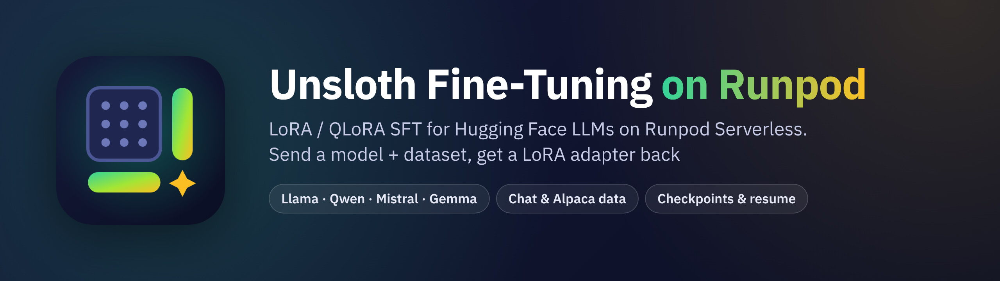

Unsloth LoRA / QLoRA Fine-Tuning — Runpod Serverless worker
Fine-tune Llama, Qwen, Mistral and other Hugging Face LLMs with Unsloth LoRA/QLoRA on Runpod Serverless. Send a base model and a chat or alpaca dataset; get a LoRA adapter on your network volume or the Hugging Face Hub.
Deploy on Runpod HubGitHub repositoryREADMEllms.txtopenapi.yamlAGENTS.mdReleases
Quick start
curl -X POST https://api.runpod.ai/v2/$ENDPOINT_ID/run \
-H "Authorization: Bearer $RUNPOD_API_KEY" -H "Content-Type: application/json" \
-d '{"input": {"dry_run": true, "base_model": "unsloth/Qwen2.5-7B-Instruct-bnb-4bit",
"dataset": "mlabonne/FineTome-100k", "dataset_format": "chat", "max_samples": 5000}}'- Measured smoke test on an RTX 4090 (23 Nov 2026): Qwen2.5-0.5B, 200 rows, 30 steps — 78.5 s job, 52.9 s cold start, about $0.06.
- Always use async /run for training and raise policy.executionTimeout (the 600 s default is too short).
- Put HF_TOKEN in a Runpod secret; tokens in the job input are rejected. Output is a LoRA adapter (no merge, no GGUF).
Full documentation: README on GitHub. License: MIT. The Hub listing link works after Runpod's review.